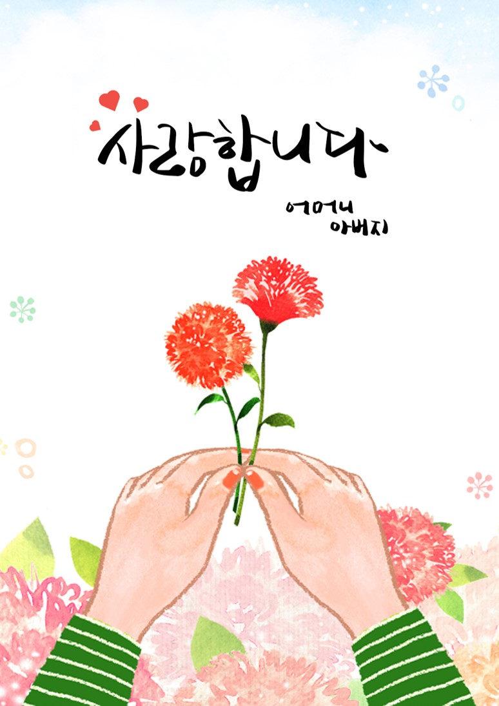
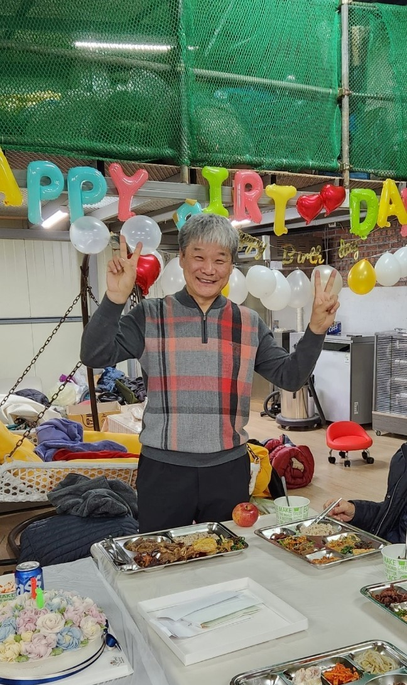
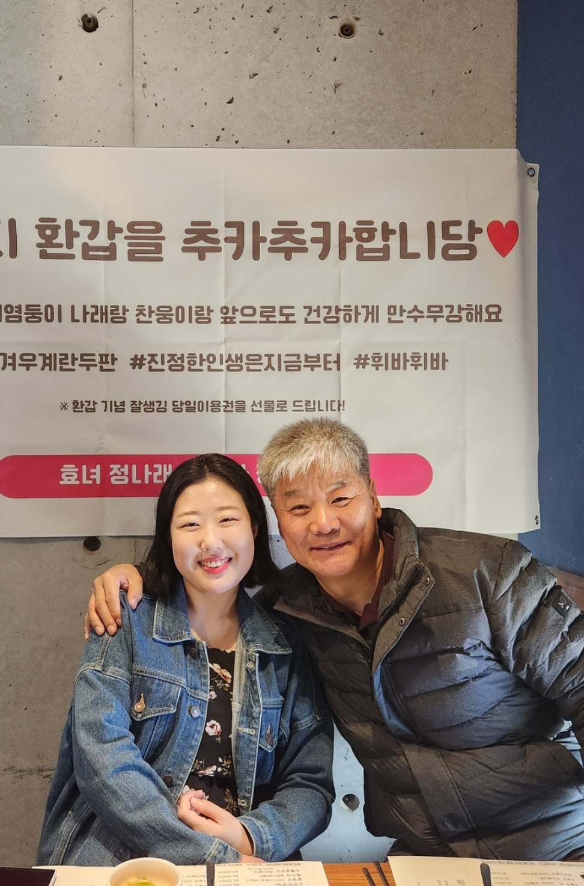
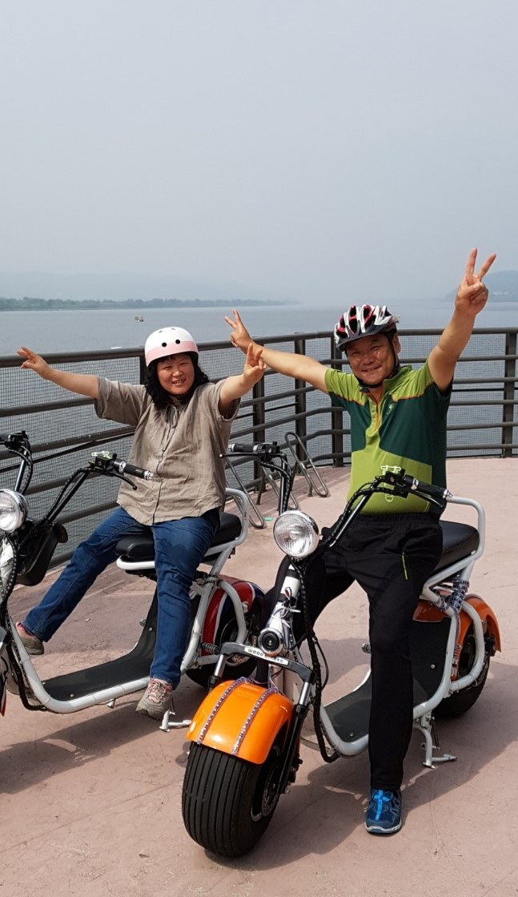
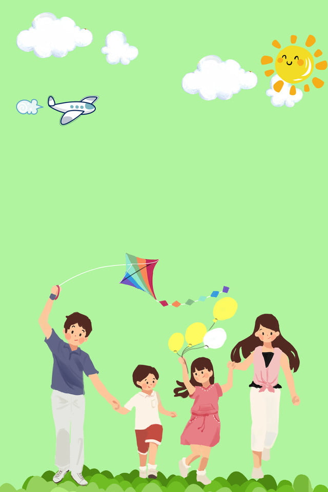
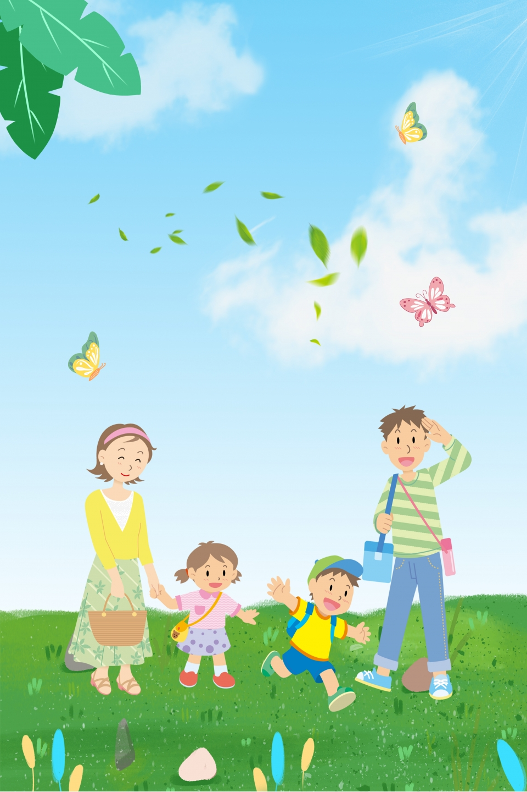

TO. 엄마 아빠
찬웅이에요
이번 어버이날에는
집에 못 올라갈 것 같아
미안한 마음에 만들어봤어요
다음달 휴가 때 한번 찾아뵐게요
아직 배울게 많지만
이제 이런거는 눈감고도 만드는
어엿한 개발자가 되었습니다 ㅎ
아빠가 말씀해주신대로
사회에 잘 자리 잡기 위해
저 요즘 참 바쁘게 살고 있어요
평소처럼 바쁘다는 핑계로
못 보는게 아니라서 그런지..
보고싶은 마음이 크네요 ㅎ
어렸을때 항상 재미없었던
엄마 아빠의 잔소리들이
점차 나이를 먹을때마다
참 소중한 조언이었다는걸 느껴요
사회에 나와보니 다른 사람에게
진심어린 조언 하나 듣기도
쉽지 않네요
지금껏 해주신 조언들을
인생의 나침반으로 삼아
길을 잃지 않고 잘 성장할게요
우리 가족들이 바라보는
엄마 아빠의 모습이나
사회에서 바라보는
엄마 아빠의 모습과 꼭 닮은
아들이 될테니 지켜봐주세요
엄마, 아빠
제가 가는길을 항상 믿어주고
밀어주셔서 감사합니다.
사랑합니다~
찬웅 올림